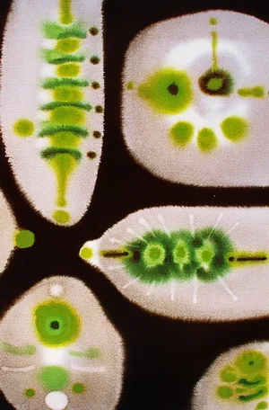
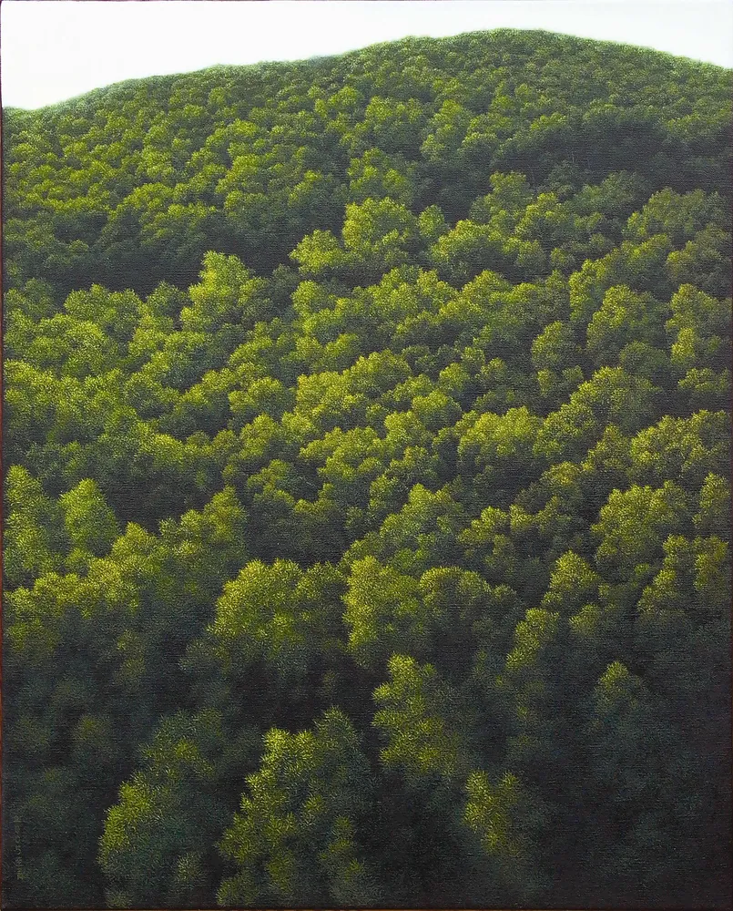
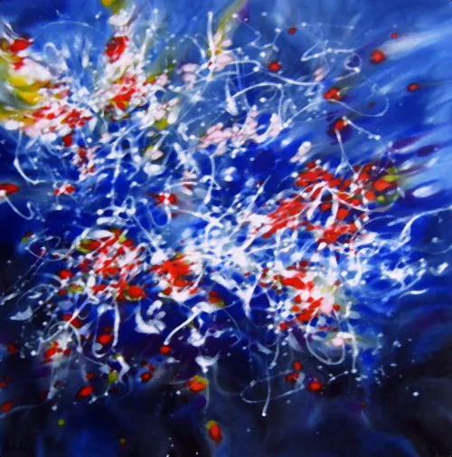
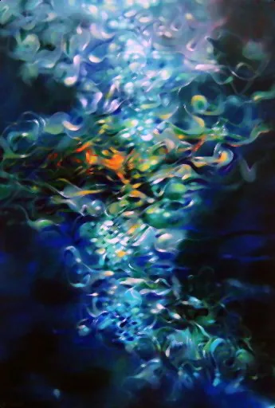
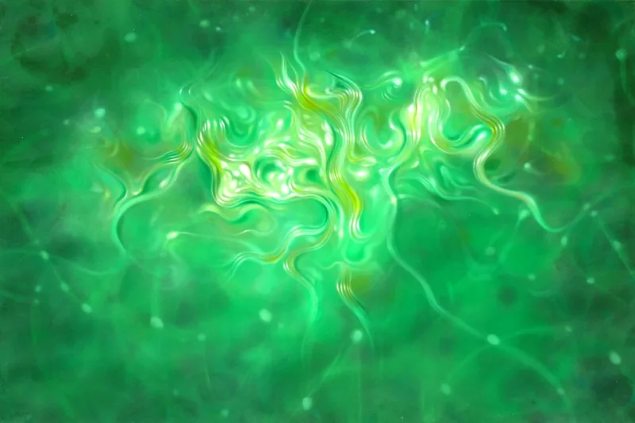
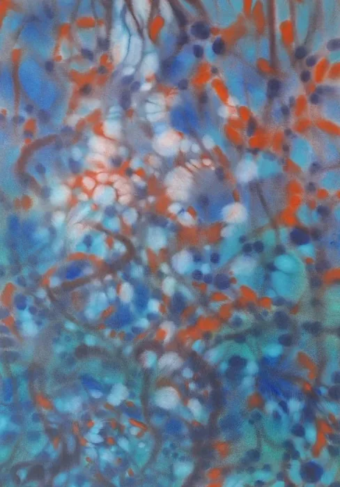
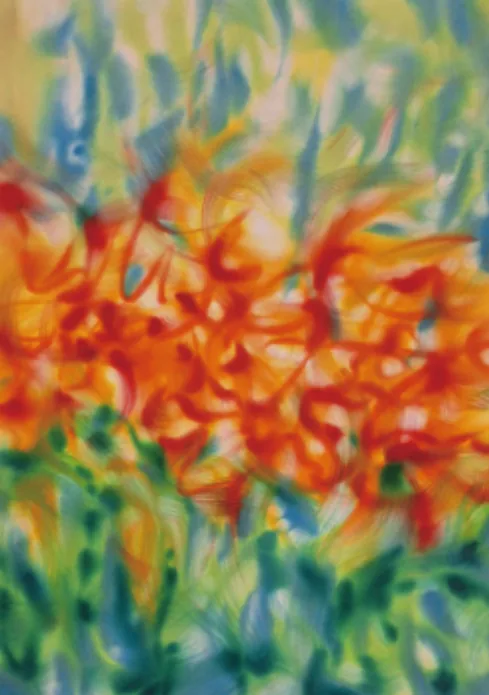
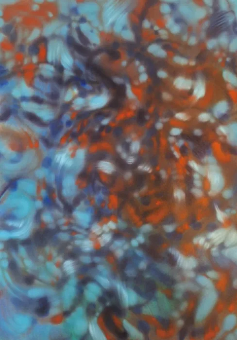

作品
1991–1995
情欲思维Psyche & Eros


1996–1998
内景Interior Scene


本系列另有作品可洽询。联络
1999
心象State of Heart



2000–2014
植相Realism (Zhi Xiang)




2007–2009
随行Take a Walk
随著行走／不在已知的探寻轨迹／随著行走／思想暂停流转／随著行走／回首已是烟消云散／我在此刻蒸发／留下的印记图腾／什么都是／什么都不是梁至青，2009 创作自述






2010
流动Flowing


本系列另有作品可洽询。联络
2010
云山水Cloud, Mountain, Water
2011–2012
花－形色Flower — Form and Colour


2012
千年之华Millennial Splendour


本系列另有作品可洽询。联络
2023 起，进行中
琉金光灿Ryukin (working title)

2024
偶发 abiogenesisAbiogenesis







情欲思维 No.1 1991
情欲思维 No.20 1994
情欲思维 No.29
情欲思维 No.30
情欲思维 No.32
内景 No.3（三连作） 1996
内景 No.21
内景 No.23
内景 No.25
内景 No.27
内景 No.29
内景 No.32
内景 No.35
心象 No.13
心象 No.47
心象 No.98
芭蕉叶 2000
芭蕉叶 2001
樟树 2003
绿竹
野姜花 2004
相思山
芭蕉林
随行 No.36 2007–2009
随行 No.38 2007–2009
随行 No.33 2007–2009
随行 No.31 2007–2009
随行 No.32 2007–2009
随行 No.23 2007–2009
随行 No.24 2007–2009
流动 No.2 2010
流动 No.4 2010
流动 No.6 2010
流动 No.11 2010
流动 No.12 2010
流动 No.13 2010
流动 No.16 2010
流动 No.18 2010
云 2010

山 2010

水 2010
白玫瑰-1 2011
粉橘玫瑰-1 2011
香水百合 2011
洋红葵百合
黄色姬百合-2 2012
孤挺花系列-1 2012
千年之华-1 2012
千年之华-4 2012
光变 No.6 2017–2018
光变 No.8 2017–2018
光变 No.14 2017–2018
光变 No.18 2017–2018
光变 No.20 2017–2018
光变 No.24 2017–2018 已售出
光变 No.28 2017–2018
光变 No.29 2017–2018
光变 No.33 2017–2018
光变 No.34 2017–2018
琉金光灿 No.01 2023 已售出
偶发 No.1 2024
偶发 No.2 2024
偶发 No.3 2024
偶发 No.4 2024
偶发 No.5 2024
偶发 No.6 2024
偶发 No.7 2024
偶发 No.8 2024
偶发 No.9 2024
偶发 No.10 2024
偶发 No.11 2024
偶发 No.12 2024
偶发 No.13 2024
没有符合的作品。